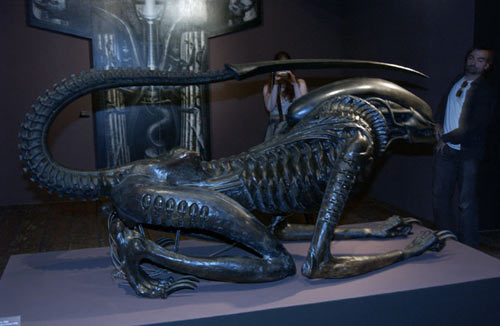
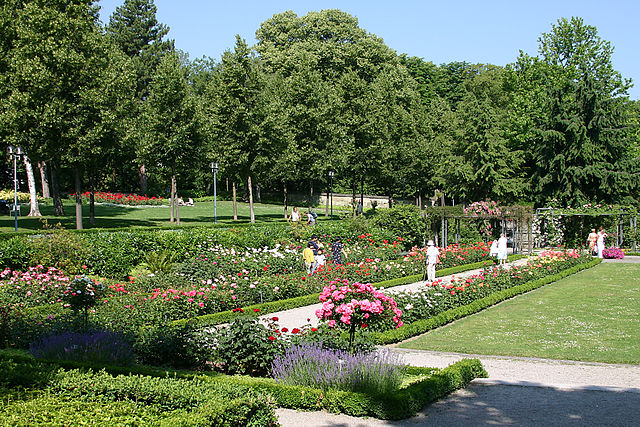
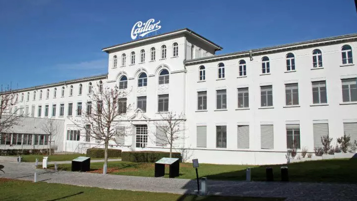

H.R. Giger Museum
While in Switzerland, one of my favorite visits was the H.R. Giger Museum.
The reason this was at the top of my list of places to see is because H.R. Giger is
the artist behind the movie Aliens. For anyone that likes Sci-Fi, I suggest this is
a must see.

Parkanlage Rosen Garten
Another at the top of my list was walking the streets of Bern and visiting
the Parkanlage Rosengarten. You can see the whole city from this park. There
are also 250 different types of roses in this garden.

La Maison Cailler Chocolate Factory
This chocolate factory is one of Switzerland's oldest and most important Chocolate
factories. They give you a tour of how their chocolate is made, along with samples!